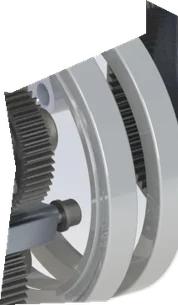
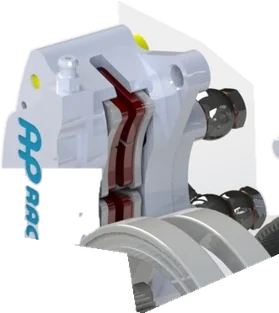
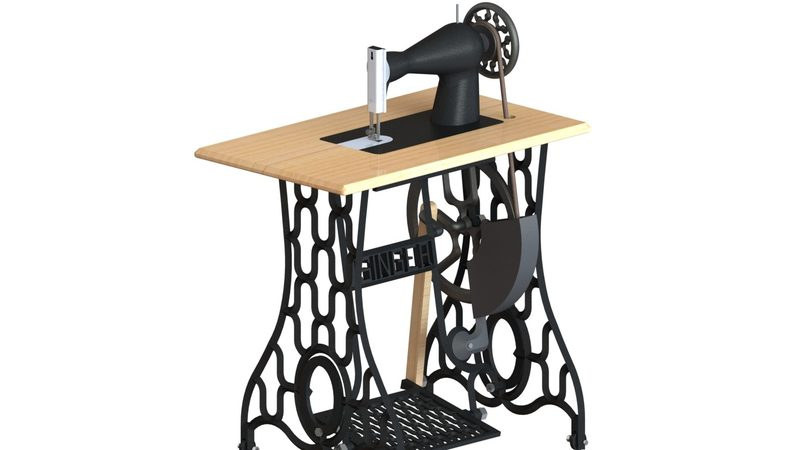
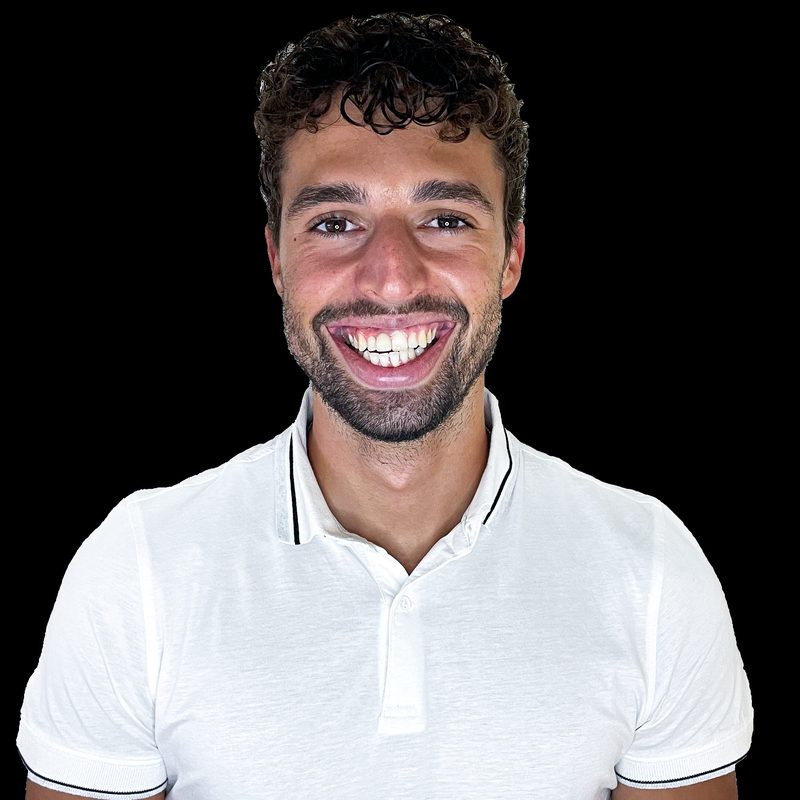

I design precision mechanical systems at ASML in Eindhoven.
Before that: a Formula Student upright that raced at Hockenheim and a thesis on a suspension that leans into corners.
Before that: a Formula Student upright that raced at Hockenheim and a thesis on a suspension that leans into corners.





Designed the front corner’s upright and hub in 7075-T6 aluminium and took them through manufacture. The car finished 9th overall at FS Germany 2019.

MSc thesis. A passive suspension concept, modelled in ADAMS and validated against tilt-table tests on a real vehicle.

A detailed CAD model of a classic treadle sewing machine, cast-iron stand included.
CAD model, no write-up
I’m a mechanical design engineer at ASML in Eindhoven. I started on the EUV source for High NA, the TWINSCAN EXE:5000 and EXE:5200, and now work on next-generation platform development.
I studied mechanical engineering at Instituto Superior Técnico in Lisbon. Most of what I know about getting a part from model to metal I learned in Formula Student, designing the uprights and hubs for FST Lisboa’s ninth car and working with the sponsor who machined them. My master’s thesis took the same habits into vehicle dynamics: a passive suspension that counters body roll, built up in multibody simulation and checked against tests on a real vehicle.
I also write Python, mostly to take the repetitive work out of design and analysis.
